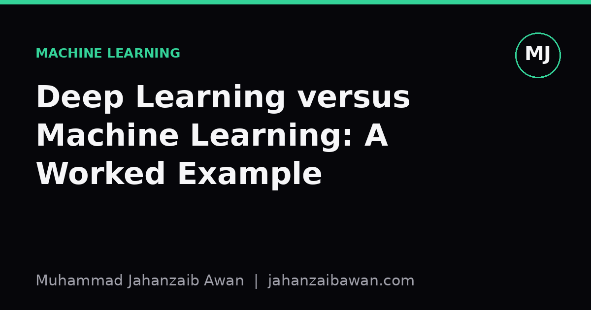

Deep Learning versus Machine Learning: A Worked Example
The distinction gets blurred in casual conversation, so let us settle it with one dataset, two models, and a feature column that does all the explaining.

Why the ambiguity persists
Ask ten people to distinguish deep learning from machine learning and you will get ten answers, most of them half right. Some say deep learning is just machine learning with more layers. Others say it is anything involving neural networks, which is closer but still vague, since a single-layer perceptron is a neural network and nobody would call that deep learning in the modern sense. The confusion is not really about terminology, it is about where the real work in a project happens: in the hands of the engineer, or inside the model itself.
I want to settle this with one concrete example rather than another definition. Suppose we are building a system to classify whether a photograph contains a cat or a dog. This is a famously simple task to describe and a genuinely useful one for illustrating the boundary, because it can be solved by both paradigms, and the contrast in how they solve it is the whole story.
The point of the example is not which approach wins. It is to show that the difference between deep learning and machine learning is not about accuracy, speed, or hype. It is about who, or what, decides which features matter.
The classical machine learning route
In the classical approach, we do not hand raw pixels to the model. We sit down and design features. For cat versus dog, we might extract edge histograms, colour distribution statistics, texture measures from a Gabor filter bank, maybe the aspect ratio of the detected face region, and the symmetry of that region. Say we end up with 40 numeric features per image. We then train a gradient boosted tree ensemble or a support vector machine on those 40 numbers.
This works, and it can work well. On a clean, well-curated dataset of a few thousand images with consistent lighting and framing, a carefully engineered feature set fed into a gradient boosted model might reach something like 88 to 92 percent accuracy, depending on how much effort went into the features. The ceiling on that accuracy is set largely by how good our 40 features are at capturing the visual cues that actually distinguish cats from dogs. If our texture features cannot tell the difference between a tabby's fur pattern and a terrier's, no amount of tree depth or boosting rounds will fix that. The model is only ever as good as the representation we chose for it.
This is the defining trait of classical machine learning in practice: a human decides what counts as signal, encodes it into a fixed-length feature vector, and the algorithm's job is purely to find the decision boundary in that space. The algorithm never sees the pixels. It sees our opinion about the pixels, expressed as 40 numbers.
Crucially, this is not a weakness in every context. On genuinely tabular data, such as loan default records with columns like income, credit history length, and existing debt, there usually is no richer underlying representation to discover. The columns already are the meaningful features. In that setting, a gradient boosted model trained directly on those columns is not a crude approximation of some better method, it is often the correct and most defensible tool, and a leakage-aware, well-validated version of it will usually beat a neural network of similar effort.
The deep learning route
Now take the same cat versus dog task and hand raw pixels, all of them, unprocessed, to a convolutional neural network. We do not tell it to look for edges or texture. We do not define any features at all. We give it a loss function, a lot of labelled images, and a training procedure, and the network itself learns, layer by layer, what to attend to.
Here is the part that actually explains the terminology: the early convolutional layers in such a network, if you visualise their learned filters, typically end up detecting edges and simple gradients, much like the hand-crafted edge detectors from the classical pipeline. The middle layers combine those into textures and simple shapes. The later layers combine those into parts, an ear shape, a snout outline, a fur pattern region. The final layers combine those parts into a judgement about the whole animal. Nobody specified any of this. The network discovered a hierarchy of representations on its own, each layer building on the abstractions of the one before it, which is precisely what the word deep refers to: depth of learned representation, not merely depth of network architecture as an engineering choice.
Given enough labelled data, say several hundred thousand images rather than a few thousand, and enough compute to train for long enough, this approach will typically surpass the hand-engineered pipeline, often reaching the high nineties in accuracy on held-out data from the same distribution. The gap exists because the network can discover feature combinations that no engineer would think to encode by hand, and it can tune those features jointly with the classification task rather than treating feature extraction and classification as two separate, sequential decisions.
But that gap is bought with real cost. The network needs far more data to find those representations reliably, it needs meaningfully more compute, and it is far harder to inspect afterwards. When the gradient boosted model gets something wrong, you can look at which of the 40 features drove the decision. When the convolutional network gets something wrong, explaining why often requires a dedicated interpretability technique rather than a quick glance at a feature importance table.
The practical takeaway
So the honest answer is that deep learning is a subset of machine learning distinguished by one specific property: it learns the representation from raw or near-raw input rather than requiring a human to engineer it. Every deep learning system is a machine learning system. Not every machine learning system is deep learning, and plenty of the best ones deliberately are not.
In practice, this should change how you choose a method for a new problem, not based on which sounds more modern, but based on two honest questions. First, is there a genuinely useful representation hiding inside raw, high-dimensional input, such as pixels, audio waveforms, or free text, that hand-crafted features would struggle to capture fully? If so, and if you have the data and compute to let a network find it, deep learning earns its cost. Second, is your data already structured into a modest number of meaningful columns, where the representation problem is effectively solved before modelling even starts? If so, reach for a well-tuned classical model first, validate it properly with a leakage-aware split, and only escalate to deep learning if that strong baseline genuinely falls short. The worked example above is the whole argument in miniature: the difference is not the model's cleverness, it is who decided what the model should look at.